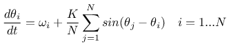
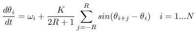
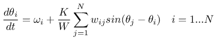
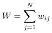
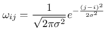
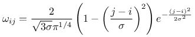
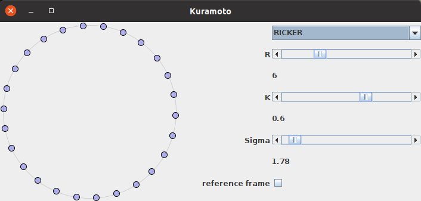

Angeregt durch einen Artikel auf Arxiv im letzten Jahr recherchierte ich ein wenig und stieß auf viele Diskussionen von Kuramoto Oszillatoren im Internet - so viele, dass ich auch damit experimentieren wollte.
Dieser Artikel ist zwar unter Chaos eingereiht - treffender müsste man ihn allerdings unter "Emergenz" oder "Selbstorganisation" fassen. Bei meinen Versuchen stellte sich heraus, dass man mit den richtigen Parametern nicht nur die ursprüngliche Art der Synchronisierung erreichen kann - näheres dazu weiter unten...
Ich begann mit dem ursprünglichen Standard-Modell

Dieses Modell beschreibt die Phasenänderung eines jeden Oszillators abhängig von seiner Eigenfrequenz und der durch die Kopplungskonstante modulierten Einflüsse aller anderen Oszillatoren im System.
Anschließend modifizierte ich die Gleichung so, dass die Einflüsse der anderen Oszillatoren nur noch regional und nicht mehr global wirksam wurden:

Dabei ist zu beachten, dass die eindimensionale Anordung von Oszillatoren als Ring verstanden wird - sonst würden auf die Oszillatoren am rechten und linken Rand weniger Einflüsse von ihren Nachbarn wirken.
Diese "Box"-Nachbarschaft variierte ich anschließend noch ein wenig wie folgt:

Wobei galt:

Und die Gewichte selber durch entsprechende Funktionen über den Abstand der beiden Oszillatoren i und j bestimmt wurden - wieder wurde hier von der Topologie eines Rings für die Kopplung der Oszillatoren ausgegangen.
Als Funktionen für die Gewichte wurden die (vereinfachte) Gauss-Verteilung

und das Ricker-Wavelet betrachtet:

Dabei ist wieder zu beachten, dass im Argument der Funktionen der Abstand der beiden Oszillatoren auf dem Ring gemeint ist.
Für diese Untersuchungen wurde die Erstellung einer GUI nötig, mit der ich die Parameter der Gewichtsfunktionen, die Gewichtsfunktion selbst und den Kopplungsfaktor variieren und den Einfluss auf die Phasen der Oszillatoren beobachten konnte. Für den eindimensionalen Fall sah ein erster Entwurf der GUI wie folgt aus:

GUI für die Experimente mit Kuramoto-Oszillatoren in einem eindimensionalen RingInteressant fand ich bei diesen Experimenten die Tatsache, dass es bei der Benutzung der Formel des Ricker-Wavelets für die Bestimmung der Gewichte mit denen benachbarte Oszillatoren einander beeinflussten Werte für dessen Parameter gab, bei dem die Phasen sich nicht synchronisierten, sondern sich (nahezu) äquidistant verteilten - wurde dieser Parameterbereich verlassen, stellte sich wieder die Synchronisation ein - egal, ob der Bereich nach unten oder oben verlassen wurde! Ein Beispiel für eine solche Verteilung der Phasen über den gesamten zur Verfügung stehenden Bereich ist in der obigen Abbildung dargestellt. Dabei war die Stärke des Kopplungsfaktors nahezu unerheblich - bei sehr kleinen Werten dieses Parameters wurde die Kopplung der benachbarten Oszillatoren natürlich unwirksam und damit folgte jeder wieder seiner Eigenfrequenz - allerdings stellte sich die äquidistante Verteilung bereits bei geringer Stärke der Kopplung ein und bleib von da an stabil. Diesseits und jenseits des für die äquidistante Verteilung der Phasen benötigten Wertes für Sigma wirkte sich eine Änderung der Kopplungskonstanten durchaus aus: Je höher deren Wert, desto geringer die Varianz der Phasen zwischen den einzelnen Oszillatoren.


Vor 5 Jahren hier im Blog
-
Neue Interaktionsmetapher in dWb+
26.03.2017
Da ich - wie ich neulich in einer Kommunikation mit einem geschätzten Kollegen zum erstenmal explizit realisierte - dWb+ schon länger pflege als es die Herstellerfirma anderer Produkte überhaupt gibt, bin ich dennoch nicht zu stolz, neue Ideen einfließen zu lassen...
Weiterlesen...
Tags
Android Basteln C und C++ Chaos Datenbanken Docker dWb+ ESP Wifi Garten Geo Git(lab|hub) Go GUI Gui Hardware Java Jupyter Komponenten Links Linux Markdown Markup Music Numerik PKI-X.509-CA Python QBrowser Rants Raspi Revisited Security Software-Test sQLshell TeleGrafana Verschiedenes Video Virtualisierung Windows Upcoming...
Neueste Artikel
-
LinkCollections 2022 III
Nach der letzten losen Zusammenstellung (für mich) interessanter Links aus den Tiefen des Internet für dieses Jahr folgt hier nunmehr die nächste:
Weiterlesen... -
Static Site Generator für Docbook
Mein eigener Static Site Generator hat jetzt einen Modus, der es gestattet, die Inhalte nicht nur als HTML-Seiten für die Publikation mittels eines HTTP-Servers zu erzeugen, sondern auch als Docbook zur Erzeugung eines PDF-Dokumentes oder E-Book im Format EPUB.
Weiterlesen... -
Trojan Source - Nachschlag
Ich habe weitere interessante Fakten zu der Trojan Source Attacke des letzten Jahres ausgegraben...
Weiterlesen...
Manche nennen es Blog, manche Web-Seite - ich schreibe hier hin und wieder über meine Erlebnisse, Rückschläge und Erleuchtungen bei meinen Hobbies.
Wer daran teilhaben und eventuell sogar davon profitieren möchte, muß damit leben, daß ich hin und wieder kleine Ausflüge in Bereiche mache, die nichts mit IT, Administration oder Softwareentwicklung zu tun haben.
Ich wünsche allen Lesern viel Spaß und hin und wieder einen kleinen AHA!-Effekt...
PS: Meine öffentlichen GitHub-Repositories findet man hier.